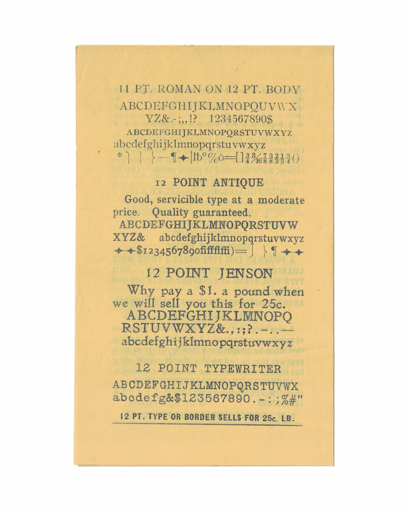

August 30, 2026
Chemung Printing Company

A specimen sheet from the Chemung Printing Company. "12 pt. type or border sells for 25c. lb." Type sold by the pound, back when a printer bought their letters as physical metal.
This is the source material behind Chemung Job. I scanned the sheet, cut out a bitmap of each character, and ran them through Potrace, which traces a bitmap into vector outlines. Potrace is built to smooth a scan into clean curves. I didn't push it that way, so the letters came out rough, edges and ink spread and all. Maybe that's a misuse of the tool. It's my own rough take on the specimen, not a faithful copy. The face only has the characters this partial sheet printed, exactly as the specimen says.
Download it here. Source on GitHub.